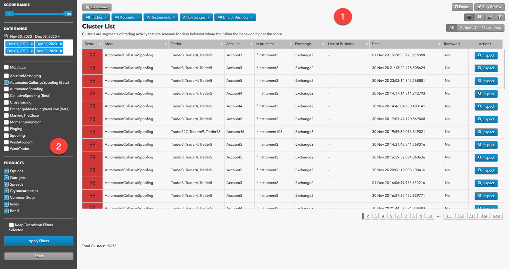
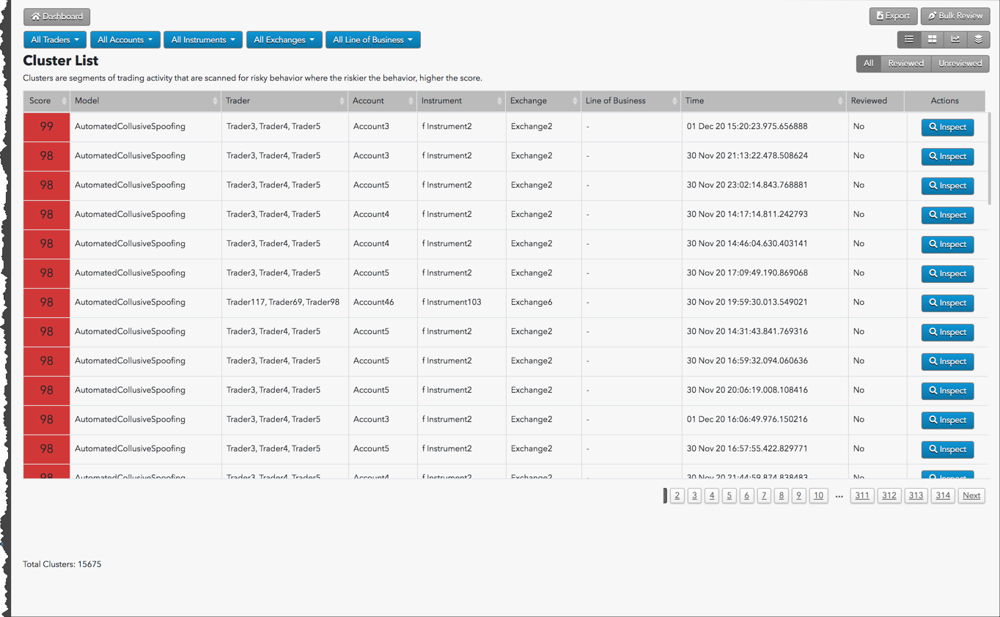

The Cluster List view shows individual clusters created from the selected dates. Each row of this sortable list is highlighted with a color to indicate the severity of that cluster's risk score.
Cluster List display

The Cluster List display is organized into the following sections:
- Cluster List: Displays the Cluster List view of the selected dates' data as well as filtering and navigation tools.
- Data Selection Panel: Manages the dates available to TT Score and specifies the criteria to use when populating the list.
Interpreting the Cluster List
The Cluster List is used to conduct a cluster list review. Once a problematic cluster group is identified, you can inspect the individual clusters contained in that group using the Cluster Scorecard. This Score column is color coded using a graduated scale tied to the risk score, transitioning from red through yellow to green and pale green as scores decrease.
While conducting a cluster list review, it can be helpful to:
- Filter out lower scoring clusters using the Score filter to make larger datasets more navigable.
- Sort the list by Start Time to see if higher scoring clusters bunch up at particular times of day.

The Cluster List displays the following:
-
Score: Risk score calculated for the cluster.
-
Model: Type of risk highlighted in the cluster.
-
Trader: Trader ID used for the cluster's trading activity.
-
Account: Account used for the cluster's trading activity.
-
Instrument: ID of the instrument whose activity is contained in the cluster.
-
Exchange: Exchange where the instrument was traded.
-
Cluster Start Time: Cluster start time with microsecond precision.
-
Reviewed: Shows whether the cluster has been reviewed by compliance officers (Yes or No).
-
Actions: Allows you to inspect and review the cluster details.
{% include cluster-filters.html %}
Data Selection Panel
{% include content/data-selection-panel.html %}